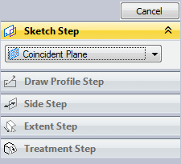
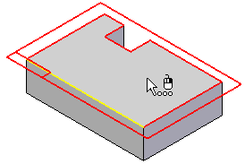
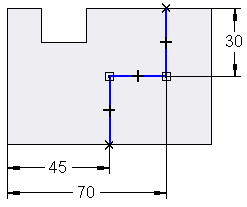
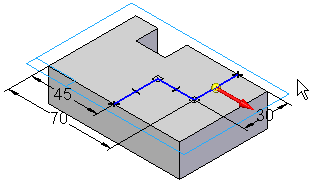
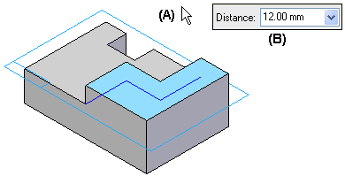
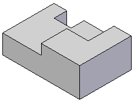

Profile-based feature workflow
All profile-based features are constructed with the same basic workflow. For example, when you construct a protrusion feature using an open profile, the command bar guides you through the steps described below:

|
Plane or Sketch Step—Define the profile plane by selecting a planar face or reference plane. |

|
Draw Profile Step—Draw the profile in the profile view. The Draw Profile Step is automatically activated when you construct a feature. |

|
Side Step—Define the side of the profile you want to add material to by positioning the cursor so that the directional arrow points towards where the material is to be added. The Side Step is skipped if you use a closed profile. |

|
Extent Step—Define the extent of the material to add with the cursor (A) or by typing a value in the command bar (B). You can also use keypoints on another feature or another part in the assembly to define the extent for a feature. See the Using Keypoints to Define Extents section for more details. When working in the context of an assembly, many features also allow you to select a keypoint on another part in the assembly to define the feature extent associatively. |

|
Finish Step—Process the input and construct the feature. The profile and dimensions are hidden automatically when you click the Finish button. |
